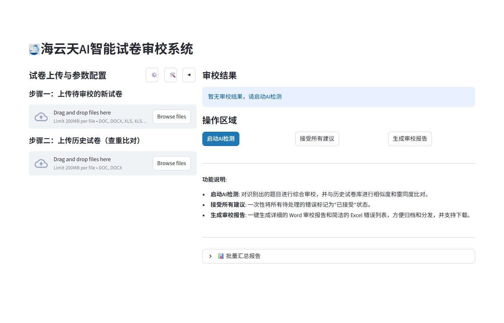
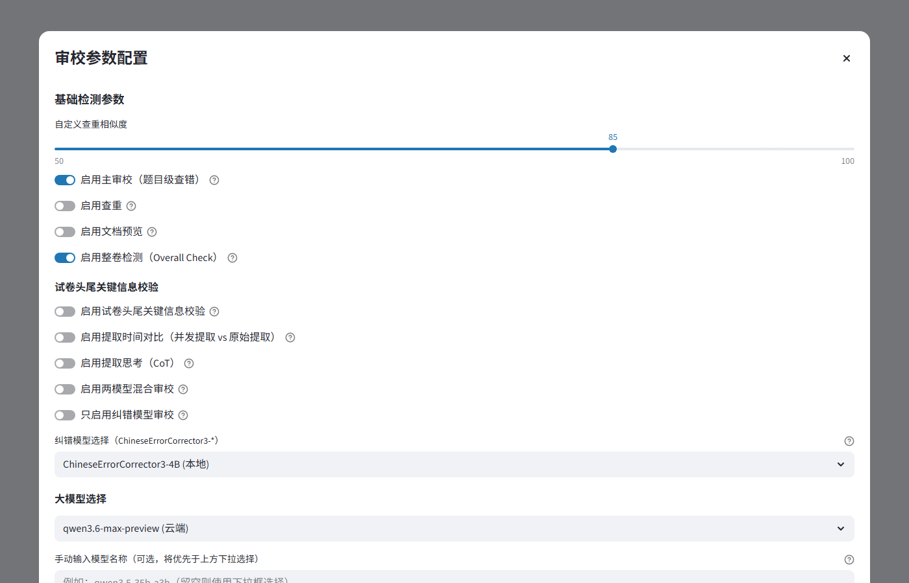

📝 AI Exam Smart Checker
LLM + vector-search platform for fully automated exam paper error detection and 3-dimension plagiarism checking
Overview
Targeting educational institution exam authoring workflows, the system automatically parses exam documents (DOC/DOCX/XLS/PDF), runs AI-powered checks across 10 error categories, and performs 3-dimension vector-based plagiarism detection. Outputs structured Word/Excel review reports. Exposes both a Streamlit UI and a Flask REST API, enabling use as a standalone tool or as the detection engine for the batch platform (exam_checker_agent).
Tech Stack
Architecture
Technical Deep-Dive
① Skeleton Extraction + Concurrent Content Fill (parser acceleration)
Document parsing runs in two phases: phase 1 — LLM extracts a "skeleton" (question IDs, headings, structural hierarchy)
as a nested JSON tree; phase 2 — multi-threaded (5 workers) concurrent fill of each node's content,
finally flattened into a Question list with major_number / middle_number / minor_number / numbering_path metadata.
For a 100-question paper this reduces end-to-end parsing latency by ~60% vs. serial processing.
Key code: smart_checker/services/extractor/paper_parser.py → PaperTextExtractor.convert_paper_to_questions()
② LangGraph Question-Type Router (reduces false positives)
The routing stage calls an LLM to analyze question type, subject and format, then produces a detection_flags
dict that gates which detection tasks run on this question (e.g. MCQs skip "answer leak" check; math questions
get "unsolvability" check). Falls back to full detection if routing returns empty. This eliminates ~40% of
unnecessary LLM calls and reduces false-positive rates.
Key code: smart_checker/services/detector/checkers/content.py → _label_question_for_routing() / _build_detection_tasks()
③ Dual-Model Decoupling: main_model + corrector_model
The primary model (main_model, e.g. qwen3.6-max-preview cloud) handles full detection and routing;
the corrector model (corrector_model, e.g. local ChineseErrorCorrector3-4B) specializes in deep Chinese
typo correction. Three collaboration modes: ① main model only; ② Union mode (merge both results);
③ Diff-only mode (show only corrector-exclusive findings).
Key code: config/domains/llm.py:LLMSettings / smart_checker/infrastructure/llm/model_manager.py:ModelManager
④ 3-Dimension Vector Deduplication
Uses the local paraphrase-multilingual-MiniLM-L12-v2 embedding model to vectorize questions and store
them in ChromaDB. Three dedup dimensions:
- Internal (
check_internal_duplicates()): pairwise cosine similarity within the same paper - Cross-bank (
CrossPaperDuplicateChecker): comparison against other subject/grade question banks - Historical (
check_historical_duplicates()): comparison against accumulated historical question banks
Default similarity threshold 0.85 (configurable); identical threshold 0.98. Results include a confidence score field.
Key code: smart_checker/services/detector/checkers/duplicate.py
⑤ 10 Error Categories + CoT Support
typo_checkambiguity_checkoptions_checkpunctuation_checkmismatch_checkmissing_checkunsolvability_checkanswer_leak_checkimage_inconsistency_checklogic_checkAll detection tasks support Chain-of-Thought (CoT) mode via the enable_thinking flag, with separate thinking/non-thinking parameter sets (temperature, top_p, etc.).
⑥ Multilingual Support (zh/ja/de/fr)
The system auto-detects the exam language and loads the corresponding prompt template directory
(assets/prompt/detection/{ja,de,fr}/) and routing prompt (assets/prompt/routing/{zh,ja,de}/question_routing.txt).
All four languages share the same detection framework; ja/de/fr each have dedicated spelling and grammar tasks.
⑦ Flask REST API (reused by batch platform)
Screenshots


Key Highlights
- LangGraph type-aware routing eliminates ~40% of redundant LLM calls and reduces false positives
- Skeleton + 5-thread concurrent fill reduces 100-question parsing latency by ~60%
- Dual-model Union/Diff-only modes improve Chinese typo recall
- 4-language support (zh/ja/de/fr) via a single framework with prompt-template directories
- Flask API exposes full capabilities; reused directly by the production batch platform